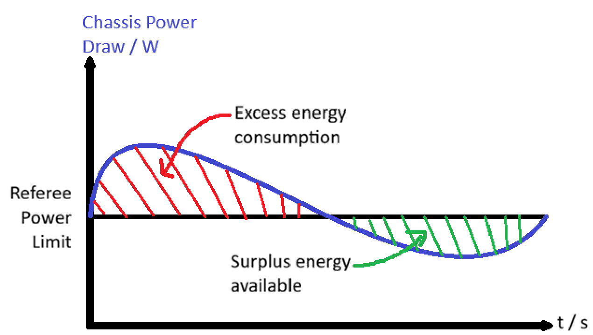
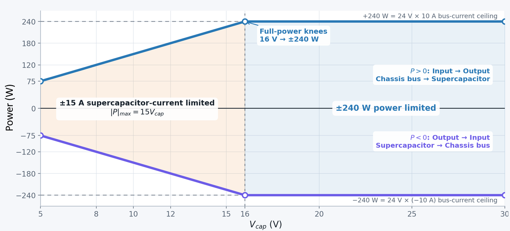
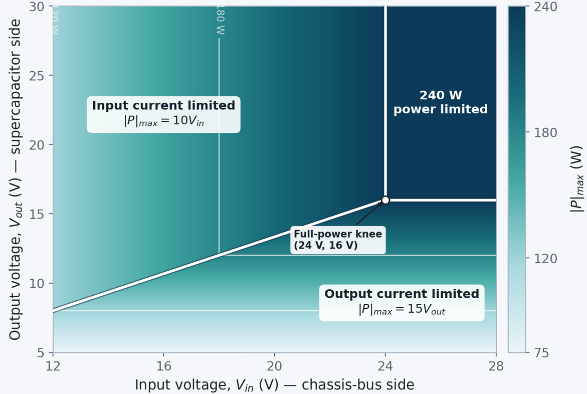

What is the limit?
Your robot gets a power budget.
The referee system limits chassis motor power from 50 W to 120 W, depending on robot level. A small 60 J virtual buffer allows brief moments above that limit.
NormalBurst
Built for power-limited robot chassis
SCV2 gives your robot a physical energy buffer, so hard acceleration, ramps, and sudden loads do not empty the referee buffer as quickly.
Supporting a power spike −186 W
The 3-minute lesson
You do not need to be a power-electronics expert. Start with the referee’s virtual buffer, then see how SCV2 adds a much larger physical one.
What is the limit?
The referee system limits chassis motor power from 50 W to 120 W, depending on robot level. A small 60 J virtual buffer allows brief moments above that limit.
What happens during a burst?
If the chassis draws 60 W above its limit for one second, it consumes 60 J. When demand falls below the limit, the unused allowance refills the buffer.
Power × time = energy
Why it matters: depleting the referee buffer can cause a five-second chassis shutdown.
Why add SCV2?
SCV2 stores surplus power in a supercapacitor bank, then returns it during acceleration and climbs—giving you roughly 1,200–1,400 J of usable energy.
Put it together
Below the referee limit, SCV2 captures unused power. Above it, SCV2 supplies the difference. The chassis gets the response it needs while the referee sees a steadier load.

Engineered for competition
Fast control, practical interfaces, and protection designed around what actually happens inside a robot.
Fast response
Typical 150 μs chassis load-step settling keeps power delivery controlled through sudden changes.
150 μs typicalBidirectional
Charge the bank from unused allowance, then support the chassis at up to 240 W.
Robot-friendly
Integrate with your control stack, debug in the pit, and monitor live data from the dashboard.
Built-in protection
At a glance
Everything you need to install the hardware, connect your robot, and inspect the controller in the field.
Port convention: IN is the chassis-bus side and OUT is the supercapacitor side. Both ports can source or sink power.
| Port | Parameter | Range or limit |
|---|---|---|
| IN Chassis bus | Voltage range | 12 to 28 V |
| Current limit | −10 to +10 A; programmable in debug mode | |
| Power setting | −240 to +240 W; programmable in 1 W steps | |
| Reverse-flow voltage limit | 26.2 V if the battery disconnects while reverse power is set | |
| OUT Supercapacitor | Voltage range and setting | 5 to 30 V; digitally programmable |
| Current limit | −15 to +15 A; fixed limits | |
| Response | Chassis load-step settling | <1 ms; 150 μs typical |
| Performance | Peak efficiency | Up to 97% |
Power sign: positive power flows from IN to OUT and charges the bank. Negative power flows from OUT to IN and supports the chassis bus.

